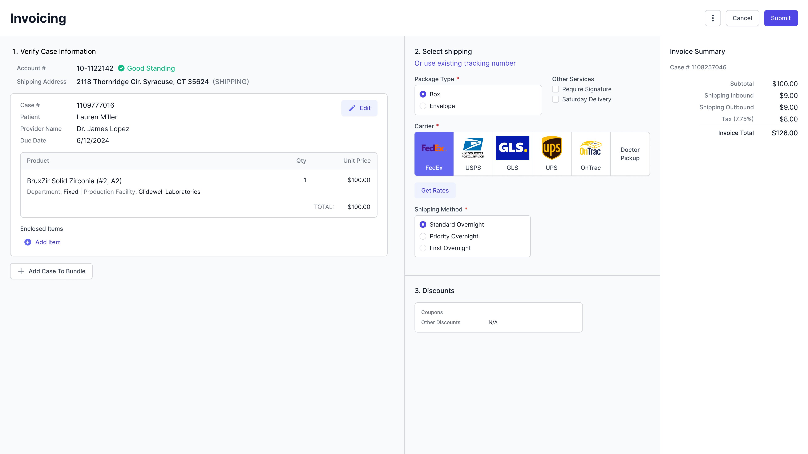
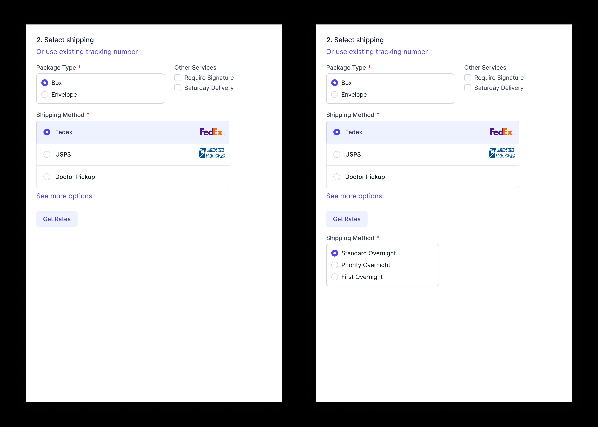
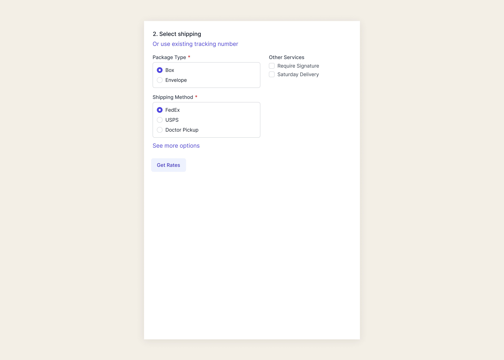
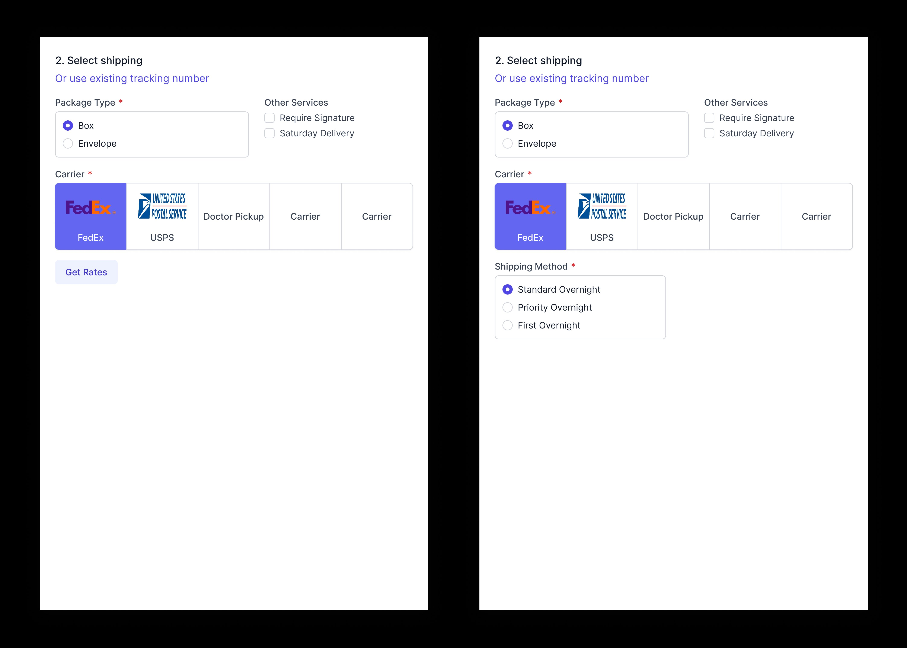
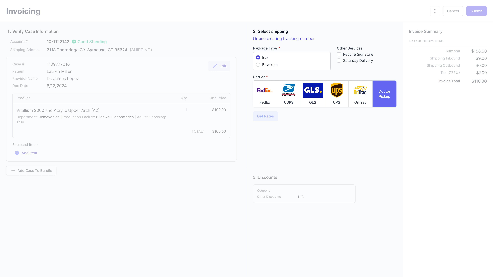
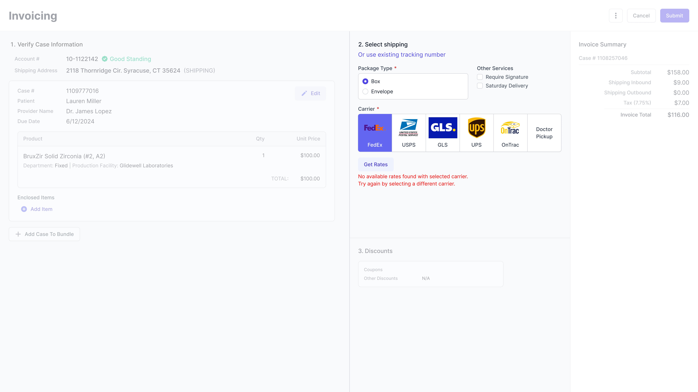
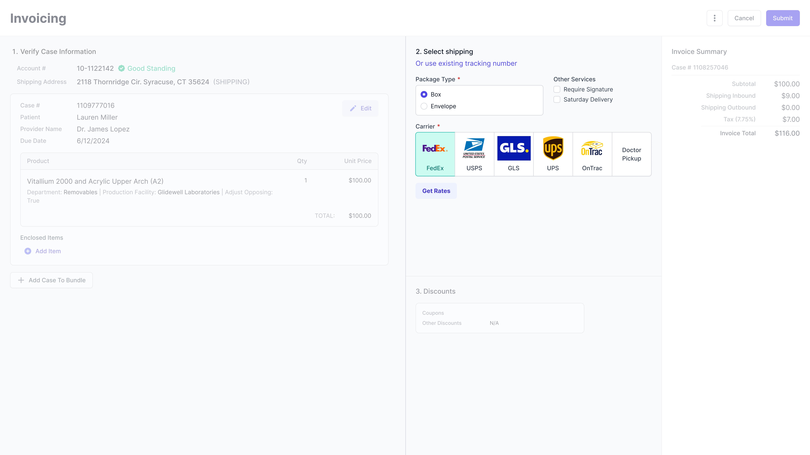

One design change. 91.66% fewer API calls. Zero disruption to users.

The invoice page in our Lab Management System was slow — and the design was the reason. Every time a user opened an invoice, the page fired multiple external API calls simultaneously to fetch all possible carrier rates upfront. For lab invoicing users trying to move quickly through case shipments, that loading time was a constant frustration.
The cost was twofold: users were losing time, and the business was paying for every unnecessary call through our third-party carrier integration. At scale, the design was becoming increasingly expensive to run.
How might we redesign the carrier rates flow to reduce loading time and operational cost — without disrupting the experience for lab invoicing users?
Before jumping to solutions, I reached out to the shipping team and data team to understand how users were actually interacting with the existing flow.
FedEx alone accounts for 60% of all shipments. The rest splits between USPS, occasional UPS — avoided unless set as a doctor preference — and Doctor Pickup, which carries no shipping charge and needs no API call at all.
This data reframed the problem entirely. The current design treated every carrier equally, loading rates for all of them every time. But if FedEx covers 60% of cases, most users only ever needed one carrier's rates. We were making five calls when one would do.
Working closely with the development team, we landed on a better trigger point: instead of firing all API calls on page load, the user selects a carrier first — then a single call fires for that carrier when they click "Get Rates."
Before — all carrier rates loaded on page open
Estimated reduction in external API calls per case — a significant cost saving at scale, with faster load times as an immediate benefit for users.
I explored three directions for how the carrier selection UI could support the new trigger model — each with a meaningfully different relationship between selection and API call timing.
Easier formatting and a familiar linear pattern — but with more than a few carriers listed, the section extends vertically and pushes rates and discounts further down the page.

Compact and consistent — but removes the carrier logos entirely. Users actively rely on these to identify carriers at a glance, so losing them would slow down a step that currently happens fast.

Minimal change for users. Carrier logos stay. A "Get Rates" button becomes the new API trigger instead of firing on load.

Exploration 3 won because it solved the engineering problem without creating a design problem. Users wouldn't need to relearn anything — the only visible change was a button.
FedEx is pre-selected on load — the most-used carrier at 60%. From there, users click "Get Rates" to trigger a single API call. Switching carriers fires a new call only for that selection, keeping costs low without hiding options. A loading state communicates progress so users always know the page is working.
Moved earlier in the flow alongside package type — so users can pre-configure add-ons before requesting rates, avoiding an extra API call after the fact.

Explicit messaging when no rates are available for a selected carrier. Errors are now scoped to individual calls — simplifying error handling on the engineering side.

Doctor Pickup requires no API call and loads instantly. Doctor-set carrier preferences pre-select automatically — no change in behavior for that workflow.

By defaulting to the most-used carrier and moving the API call behind a user action, we reduced unnecessary external calls by an estimated 91.66% per case — while keeping the experience completely familiar to lab teams.
Development is underway. Once live, we'll be monitoring load time per session, API call volume, and how users interact with the new "Get Rates" trigger. The hypothesis is strong — behavior at scale will tell the full story.
What I'd do differently: I'd push for usability testing with actual lab invoicing users earlier in the process. Even a quick 3-person session would have validated the loading state design faster than internal review alone.